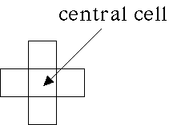

| Two-dimensional, N = 5 (a von Neumann nbhd) |
| The nbhd consists of the central cell and the cells to the immediate N, S, E, and W. |
| That is, the nbhd of the central cell is the central cell and those four cells sharing an edge with the central cell. |
|  |
Return to Neighborhoods.